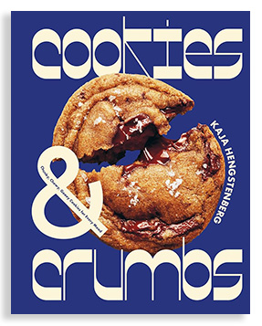
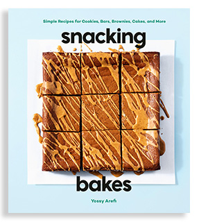
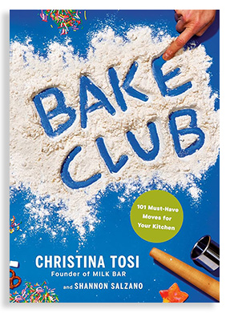

Book List
3 Baking Books for Lazy Bakers
If you love to bake, but don’t want to get too precious about it, these no-fuss, no-muss baking books are for you. No fancy ingredients, no expensive equipment, and not a single piping bag in sight - just delicious treats that anyone can make!

Cookies & Crumbs: Chunky, Chewy, Gooey Cookies for Every Mood
by Kaja Hengstenberg
If you’re looking to expand your cookie repertoire, you can’t do much better than Kaja Hegstenberg’s Cookies & Crumbs. This fun cookbook offers unique and unforgettable flavour combinations without taking itself too seriously. The recipes are are simple enough for beginner bakers and Hengstenberg offers handy tips throughout.
Must-try recipe: Cardamom, Coconut & Coffee Cookies

Snacking Bakes: Simple Recipes for Cookies, Bars, Brownies, Cakes, and More
by Yossy Arefi
In this follow-up to her wildly successful Snacking Cakes, Yossy Arefi expands her baking philosophy of “minimal effort, big rewards” to include cookies, cakes, brownies and bars. With 60 recipes that can be made in under an hour, in one bowl with no fancy equipment Snacking Bakes is the perfect book for lazy bakers.
Must-try recipe: Glazed Cookie Butter Bars

Bake Club: 101 Must-Have Moves for your Kitchen
by Christina Tosi
The queen of playful baking and nostalgic treats, Christina Tosi wants everyone to feel like they can be a baker. Her latest cookbook, Bake Club, is loaded with fun and delicious snacks and baked goods that anyone make - no fancy ingredients or equipment needed! From homemade pop rocks to peanut butter crunch pie, Bake Club's recipes are sure bring out your inner child and make you smile.
Must-try recipe: Apple Cider Donut Bundt Cake